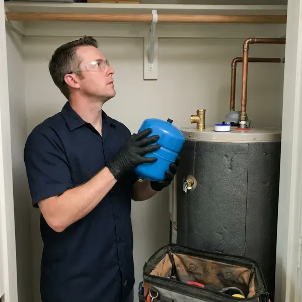

Water Heater Expansion Tank Installation in Minneapolis, MN
Add years to your water heater with an expansion tank from CNV Plumbing in Minneapolis, MN, usually installed same day.
- Same-Day Installs
- Local Minneapolis Team
- Written Prices Up Front
- Potable-Rated Tanks

Protect Your Water Heater in Minneapolis, MN
Call CNV Plumbing for a free estimate before the relief valve drips again.
Thermal Expansion Protection in Minneapolis, MN
High incoming pressure and pressure regulators are common in Minneapolis homes. Heating water from about 60 to 120 degrees expands it, and without an expansion tank that extra water pushes system pressure up until the relief valve on the heater opens. One visit solves it.
Some of what we do:
- Tank sizing by heater gallons, pressure and temperature
- Protecting heaters from thermal expansion
- Compliance with local code

Additional Plumbing Installation Services in Minneapolis, MN
We install water heaters, pumps, lines, and fixtures across Minneapolis, MN with careful, permitted work that passes inspection the first time.


Customers
Why Choose CNV Plumbing for Water Heater Expansion Tank Installation in Minneapolis, MN?
Careful assessment comes before any tank goes in. The heater size, PRV and static pressure all get checked, then choose the tank and set the charge so it does the job for years instead of failing early from being undersized or charged wrong. Guessing costs you a tank.
- Code Compliance, Many local codes require a tank on new heaters where the system is closed.
- Properly Supported, Tanks are strapped or bracketed so their weight stays off the piping.
- System Protection, The tank absorbs expanded hot water, so your heater and pipes are not strained.
Citywide Coverage
Water heaters in Minneapolis sit in garages, closets and attics, and we install tanks in all three. Attics need extra care, with a drain pan check and solid strapping, but the truck carries several sizes so most jobs still finish on the first visit. Small closets are not a problem.
Experienced Team
Quality work is what each plumber at CNV Plumbing cares about. Every tank gets supported so the pipe carries none of the weight, check every joint for leaks, and leave the area clean with the old tank hauled away. Clean jobs are standard.
Safety-First Approach
Careful installation prevents the hazards that come with high pressure. We check every connection for leaks under full pressure, and we confirm the relief valve still works, because the expansion tank lowers pressure but the T and P valve is still the last line of defense. Both have to work.
Trusted Certified Minneapolis Plumbing Services Professionals
At CNV Plumbing, we are proud to offer certified plumbing services throughout Minneapolis, MN. Credentials matter in this trade. Every repair, install and maintenance visit follows strict safety and quality rules, and the plumbers doing the work carry recognized industry credentials.
Call Us Now PHCC Plumbing Contractor Recognition
PHCC Plumbing Contractor Recognition Better Business Bureau (BBB) Accreditation
Better Business Bureau (BBB) Accreditation Angi Certified Pro
Angi Certified Pro ISO 9001 Quality Management Certification
ISO 9001 Quality Management CertificationWater Heater Expansion Tank Installation Services in Minneapolis, MN
Amtrol Expansion Tank Services in Minneapolis
Amtrol's Therm-X-Trol tanks use a butyl diaphragm inside a steel shell with a lined water chamber. We size the model to your heater and pressure, mount it on the cold supply, and set the precharge before water goes into the tank, since you cannot adjust the air side properly once the system is full in Minneapolis. Order matters on this job.

Commercial Expansion Tank Solutions in Minneapolis, MN
Commercial water heaters move far more water, so the expansion volume is bigger too. We size the tank to the full system volume, storage tanks included, then floor-mount it with proper supports and schedule the install around your business hours in Minneapolis, MN. Downtime is kept short.
Tank Sizing and Placement in Minneapolis
Sizing comes down to heater volume, supply pressure and water temperature. We plug those into the manufacturer chart, then mount the tank on the cold inlet near the heater, in a spot you can reach later, because the precharge needs checking and the tank will eventually need replacing in your Minneapolis home. Access saves money later.
Standard Water Heater Expansion Tank Installation in Minneapolis
Most tank-style water heaters on a closed system need an expansion tank on the cold supply. We tee it into the cold line a few feet from the heater, precharge the air side to your measured house pressure, and strap it to the wall so the weight never hangs on the pipe in your Minneapolis home. Then we run a heating cycle.
Tankless Water Heater Expansion Tank Integration in Minneapolis, MN
Tankless heaters hold only a gallon or so, so thermal expansion is usually small. A recirculation pump or a buffer tank changes that, and some codes in Minneapolis, MN still call for an expansion tank on any closed system, so we check your setup and the local rule before recommending one. You may not need one.
Expansion Tank Installation Cost Comparison in Minneapolis, MN
Adding the tank during a water heater replacement is the cheapest time to do it. The water is already off and the piping is open, while a standalone install costs a bit more in labor, and attic work, a larger tank or a new PRV push the total higher in Minneapolis. Pricing comes first.
Expansion Tank Sizing for Large Water Heaters in Minneapolis
Larger heaters and higher supply pressure call for a bigger tank. A 75 or 80 gallon heater often needs a 4.5 gallon tank, and high-capacity systems may need more, so we work from the manufacturer chart instead of guessing, since an undersized tank over-flexes and fails early in Minneapolis. Charts beat guesses.

Pressure Reducing Valve and Expansion Tank Pairing in Minneapolis
Pressure reducing valves are common, and they protect fixtures from high street pressure. They also turn your plumbing into a closed system, so we test the PRV output, replace it if it is creeping, and pair it with a correctly charged expansion tank so pressure stays steady throughout the house in Minneapolis. Creeping PRVs are common.
Expansion Tank Installers Near You in Minneapolis, MN
Our plumbers work in Minneapolis every day and know how local water pressure and regulators affect heaters. That experience lets us size the tank correctly the first time, and you get a quick, clean install and a system that stays balanced long after we leave. Balanced pressure is the goal.
Local plumbing systems are what we know best. The same regulators and meter setups show up every week, so we know how they behave and can size your expansion tank and set the charge correctly on the first try in Minneapolis. No return visit needed.
CNV Plumbing at a Glance
- Licensed and insured plumbers serving Minneapolis, MN
- 24/7 emergency service with same-day scheduling
- Upfront, flat-rate pricing before work begins
- 4.8-star rated by 501+ Minnesota customers
Minneapolis Map
Minneapolis Information
- Population
- 425,115
- Area codes
- 612/763/952
- Service area
- Minneapolis and communities within 40 miles
- Nearby
- St. Louis Park, Edina, St. Paul, Minnetonka
High incoming water pressure and widespread pressure regulators make thermal expansion a real issue for water heaters in Minneapolis, MN, and a properly charged expansion tank keeps that pressure in check.
Talk to a Plumber
Reach out to CNV Plumbing for reliable plumbing work done by licensed pros in Minneapolis, MN.
Our Specialized Plumbing Services in Minneapolis, MN
At CNV Plumbing, we handle the full list of plumbing services across Minneapolis, MN. From leak detection to full system installs, our team works fast and charges fair prices on homes and commercial properties alike. Take a look at our core services below:


How Our Water Heater Expansion Tank Installation Works in Minneapolis, MN
Every expansion tank job in Minneapolis follows the same order.
Request a Quote
Call (612) 712-9569 and tell us about your water heater and any symptoms like a dripping relief valve. We give you an honest price.
Test and Size
We measure static pressure, check the PRV and relief valve, and pick the tank. The air charge is set to match your pressure.
Install and Verify
We install and support the tank on the cold supply, then run the heater through a cycle. Pressure has to stay stable.
Frequently Asked Questions About Water Heater Expansion Tank Installation in Minneapolis
Most installs in Minneapolis run $250 to $500, parts and labor included. The price moves mostly with tank size and access, along with any piping changes, so an attic heater or a tight closet with no room for a tee costs a little more than an open garage install. You get the price up front.
Sometimes. Most tankless systems hold so little water that expansion is minor, but a closed system with a backflow preventer, a PRV or a recirculation loop can still call for one, and we check before recommending it. Local code may require it regardless.
Five to ten years is typical. Hard water and high pressure can shorten that, so we check tanks during water heater service.
Closed plumbing systems need somewhere to put expanded hot water. Without a tank, thermal expansion can damage the heater, pipes and fixtures, leading to leaks and early failure, and plenty of local codes in Minnesota require a tank for that reason. The tank itself is small.
Yes, on both the tank and our labor. Tank coverage comes from the maker, and labor coverage comes from us, and we go over the specific terms during your visit so you know who to call and for how long. Coverage usually runs one to five years.
Heated water expands. With a closed system, the extra water has no escape, so pressure climbs every cycle and wears out heater components and relief valves, sometimes causing leaks, while the expansion tank gives that water an air cushion to push against instead. The air cushion absorbs it.
Most tanks last 5 to 10 years. Scale buildup shortens water heater life and clogs aerators, which is why water softeners are so common in the state. Water quality, pressure and install quality all affect that range, and a check during water heater service will catch a failing tank before the relief valve starts dripping. Low precharge shortens life.
It looks simple, but the job involves pressurized lines, correct sizing and setting the precharge. Getting the charge wrong shortens the tank's life, and a tank hung on the pipe without support can crack a fitting, so we recommend a licensed plumber for a clean, code-compliant install. Errors lead to drips.
What People Are Saying About Our Plumbing Experts?

Laura S.
Our 40 gallon tank started leaking from the bottom after thirteen years. The tech hauled the old one out, set a new unit with a fresh expansion tank, and had hot water running in about four hours. He took the old tank with him too.
Water Heater Replacement · St. Paul, MN
James P.
Our restaurant had a slow leak at the hand sink that was rotting the cabinet base. CNV Plumbing came in at six in the morning before prep, replaced the trap and both supply lines, and was packed up before my first cook clocked in.
Commercial Plumbing · Bloomington, MN
Patricia H.
We had a slab leak that two other companies could not find. CNV Plumbing located it in under an hour with a listening device. They rerouted the line through the attic instead of breaking up the floor, so we kept our kitchen tile.
Slab Leak Repair · Minneapolis, MNAngela D.
Our sump pump quit during a storm and the water was an inch from the basement carpet. CNV Plumbing put in a new pump with a battery backup that same evening. We have had two heavy rains since. It kicked on both times.
Sump Pump · Edina, MN
Megan L.
Our upstairs tub drained so slowly that every shower turned into a bath. CNV Plumbing pulled a wad of hair out of the stopper and then snaked the line past the trap. Three months later it still drains fast.
Drain Cleaning · Edina, MNJessica T.
We were adding a gas range in a kitchen remodel and needed a new line run from the meter. The plumber pulled the permit, ran the pipe through the crawl space, and had it inspected and approved within the week.
Gas Line Repair · Bloomington, MN